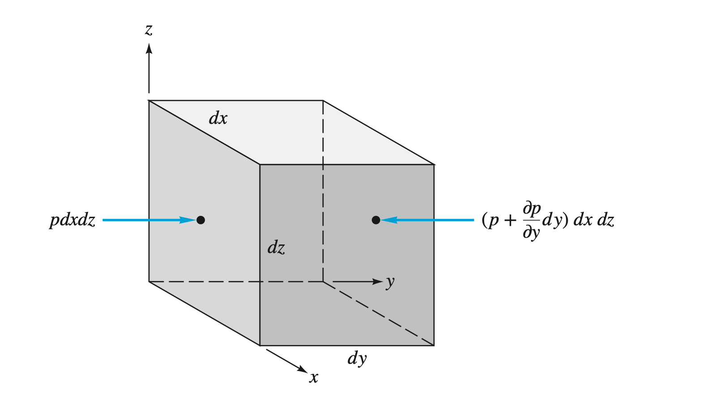

Pressure is defined as a normal force exerted by a fluid per unit area
\[\sum F_x = 0 = P_x b \Delta z - P_n b \Delta s \sin{\theta}\] \[\sum F_z = 0 = P_z b \Delta x - P_n b \Delta s \cos{\theta} - (1/2) \rho g b \Delta x \Delta z\]
\[\sum F_x = 0 = P_x b \Delta z - P_n b \Delta s \sin{\theta}\] \[\sum F_z = 0 = P_z b \Delta x - P_n b \Delta s \cos{\theta} - (1/2) \rho g b \Delta x \Delta z\] \[\Delta s \sin{\theta} = \Delta z\] \[\Delta s \cos{\theta} = \Delta x\]
\[P_x = P_n\] \[P_z = P_n + \frac{1}{2} \rho g \Delta z\]
 \[dF_y = P dx dz - \left( P + \dfrac{\partial P}{\partial y} dy \right) dx dz = - \dfrac{\partial P}{\partial y} dx dy dz\]
\[d\mathbf{F}_{press} = \left( -\mathbf{i} \dfrac{\partial P}{\partial x} -\mathbf{j} \dfrac{\partial P}{\partial y} -\mathbf{k} \dfrac{\partial P}{\partial z} \right) dx dy dz\]
\[\mathbf{f}_{press} = - \nabla p\]
The pressure gradient is causing a net force that needs to be balanced by gravity, acceleration etc.
Pressures below atmospheric pressure are called vacuum pressures
\[P\text{(gage)} = P - P_a\] \[P\text{(vacuum)} = P_a - P\]
If a fluid is at rest or at constant velocity then
\[d\mathbf{F}_{\text{grav}} = \rho \mathbf{g} dx dy dz\] \[\mathbf{f}_{\text{grav}} = \rho \mathbf{g} = \nabla p\]
Hydrostatic condition
\[\mathbf{g} = -g \mathbf{k}\]
\[\dfrac{\partial P}{\partial x} = 0, \dfrac{\partial P}{\partial y} = 0, \dfrac{\partial P}{\partial z}=-\rho g = -\gamma\]
\[\dfrac{dP}{dz} = - \gamma\]
\[P_2 - P_1 = - \int_{1}^{2} \gamma dz\]
Assumption of incompressible flow for liquids \(\rightarrow\) constant density
\[\boxed{P_2 - P_1 = -\gamma (z_2 - z_1)}\]
Newfound lake has a maximum depth of 60m and the mean atmospheric pressure is 91 kPa. Estimate the absolute pressure in kPa at this maximum depth.
\[P_{\text{max}} - P_a = -\gamma z\] \[\Rightarrow P_{\text{max}} = P_a - \gamma z = (91000\,\mathrm{Pa}) - (9790\,\mathrm{N/m^3})(-60\,\mathrm{m})\] \[ = 678400\,\mathrm{Pa}\]
Gases are compressible with density proportional to pressure
\[\dfrac{dP}{dz} = -\rho g = - \dfrac{P}{RT} g\]
\[\int_1^2 \dfrac{dP}{P} = \ln{\dfrac{P_2}{P_1}} = - \dfrac{g}{R} \int_1^2 \dfrac{dz}{T}\]
\(T=T_0\) → \(P_2 = P_1 \exp{\left[ - \dfrac{g(z_2 - z_1)}{R T_0} \right]}\)
\[P = P_a \left( 1 - \dfrac{B z}{T_0} \right)^{\frac{g}{RB}}\] \[\rho = \rho_0 \left( 1 - \dfrac{Bz}{T_0} \right)^{\frac{g}{RB} - 1}\]
\[\delta P \approx -\rho g \delta z\]
\[\delta z < \dfrac{2 T_0}{(\frac{g}{RB}-1)B}\]
Error is less than 1% if \(\delta z < 200\,\mathrm{m}\)